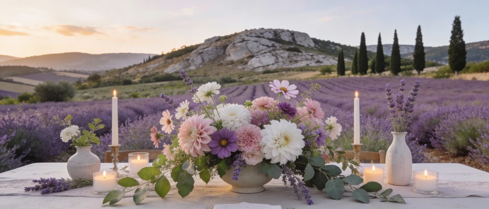

Choisir des fleurs locales et durables pour votre mariage, c’est offrir une esthétique pleine de sens à votre jour J tout en réduisant votre impact sur la planète. C’est aussi une formidable occasion de raconter une histoire cohérente avec vos valeurs : l’amour, mais aussi le respect du vivant.
Pourquoi se poser la question des fleurs ?
Les fleurs semblent innocentes… et pourtant, leur impact écologique est loin d’être neutre.
Entre les cultures intensives, les serres chauffées et les transports en avion, une grande partie des fleurs coupées a un bilan carbone très lourd.
Résultat : un poste déco qui peut rapidement faire exploser l’empreinte environnementale de votre mariage, parfois sans que vous en ayez conscience.
Choisir des fleurs locales et de saison permet :
- de réduire les kilomètres parcourus
- de limiter l’énergie utilisée pour les faire pousser
- de soutenir l’artisanat floral près de chez vous, plutôt que des chaînes industrielles lointaines
1. Comprendre l’impact écologique des fleurs
Pour faire des choix éclairés, il est utile de connaître quelques réalités du secteur floral :
- Une grande partie des fleurs vendues en France est importée (souvent d’Afrique, d’Amérique du Sud ou de serres intensives en Europe).
- Leur culture peut nécessiter beaucoup d’eau, de pesticides et d’énergie pour chauffer ou éclairer les serres.
- L’acheminement en avion puis en camion alourdit fortement leur empreinte carbone.
Sans tomber dans la culpabilité, l’idée est de se dire : “Si nous avons le choix, pourquoi ne pas privilégier des fleurs qui respectent davantage la planète… et les personnes qui les cultivent ?”
2. Privilégier les fleurs locales et de saison
La clé d’un bouquet plus durable, c’est la saisonnalité. Tout comme pour l’alimentation, choisir des fleurs de saison permet de :
- réduire la culture sous serre chauffée
- éviter les importations lointaines
- bénéficier de variétés plus fraîches, souvent plus odorantes et plus résistantes
Quelques exemples de pistes (à adapter selon votre mois de mariage et votre région) :
- Printemps : renoncules, anémones, tulipes, lilas, pivoines en fin de saison
- Été : dahlias, zinnias, cosmos, tournesols, lavande, statice, achillées
- Automne : chrysanthèmes, dahlias tardifs, hortensias, graminées, feuillages colorés
- Hiver : hellébores, branches, feuillages, baies, fleurs séchées, quelques variétés de saison sous serre raisonnée
L’idéal ? Discuter tôt avec un·e fleuriste engagé·e pour savoir ce qui sera vraiment disponible à la date de votre mariage, plutôt que de partir d’un tableau Pinterest composé de fleurs importées.
3. Comment repérer un·e fleuriste engagé·e ?
Le choix du/de la fleuriste est central. Pour trouver un partenaire aligné avec vos valeurs, vous pouvez :
- Chercher des artisans qui parlent de local, de saison, de slow flower ou de production française sur leur site ou leurs réseaux.
- Poser des questions très concrètes :
- D’où viennent vos fleurs ?
- Travaillez-vous avec des producteurs locaux ou des fermes florales ?
- Quelles variétés seront de saison à la date de notre mariage ?
- Vérifier leur manière de travailler :
- Utilisation limitée de mousse florale (non biodégradable)
- Réemploi des contenants et des structures
- Proposition de fleurs séchées locales, quand c’est cohérent
Vous pouvez aussi demander s’ils ont l’habitude de travailler sur des mariages éco-responsables : ce simple mot-clé vous permettra de sentir leur sensibilité au sujet.
4. Ajuster vos attentes pour gagner en cohérence (et en budget)
Un mariage plus durable, ce n’est pas forcément “moins beau”, c’est souvent plus réaliste et plus créatif. En matière de fleurs, cela implique parfois :
- d’accepter de renoncer à certaines variétés “star” hors saison
- d’oser des couleurs légèrement différentes de celles vues sur Instagram
- de laisser au/à la fleuriste une vraie marge de manœuvre pour composer avec ce que la nature offre au moment T
En échange, vous gagnez :
- des compositions plus vivantes
- un résultat unique, qui ne ressemble pas à un copier-coller
- souvent, un budget mieux maîtrisé, car on évite les fleurs rares ou importées
5. Jouer avec les feuillages, les textures et les volumes
Pour limiter la quantité de fleurs tout en gardant un effet “wow”, plusieurs astuces :
- Donner une grande place aux feuillages (eucalyptus, olivier, ruscus, lierre, etc.)
- Utiliser des graminées, des branchages, des baies, des éléments ramassés localement (dans le respect de la réglementation, évidemment)
- Mélanger fleurs fraîches et fleurs séchées locales pour certaines zones (plan de table, coin livre d’or, bar)
- Miser sur de beaux contenants (vases, pots, bougeoirs) qui créent déjà un décor avant même d’être remplis
Ainsi, vous réduisez le volume de fleurs coupées sans appauvrir la scénographie.

6. Penser réutilisation et seconde vie des fleurs
Un bouquet durable, c’est aussi un bouquet qui vit plusieurs vies :
- Réutiliser les fleurs de la cérémonie laïque pour décorer un autre espace (le coin livre d’or, le buffet, le photobooth ou l’espace lounge).
- Transformer les centres de table en petits bouquets à offrir à vos proches à la fin de la soirée.
- Prévoir que certaines compositions puissent être séchées après le mariage (bouquet de la mariée, couronne, petit centre de table fétiche) pour devenir un souvenir durable.
Vous pouvez en parler dès le départ avec votre fleuriste et votre wedding planner pour organiser ces déplacements et ce “recyclage poétique” des fleurs.
7. Quelques idées concrètes pour un bouquet plus durable
Pour résumer, voici quelques pistes simples à mettre en place :
- Choisir une palette de couleurs plutôt qu’une liste de variétés imposées, et laisser le/la fleuriste créer avec les fleurs locales disponibles.
- Limiter le nombre de gros points fleuris (bouquet de la mariée, quelques centres de table, une arche ou un point focal) plutôt que de vouloir des fleurs partout.
- Préférer une bougie en cire naturelle, quelques beaux textiles et de la vaisselle soignée pour compléter la déco sans multiplier les fleurs.
- Privilégier des rubans en tissu réutilisable plutôt que des liens plastiques pour vos bouquets.
Chaque petit détail compte : ce sont toutes ces décisions cumulées qui font une vraie différence, pour l’environnement comme pour votre budget.
8. Se faire accompagner dans vos choix
Vous n’êtes pas obligés de tout maîtriser ni de connaître par cœur les variétés de fleurs de saison. L’essentiel est de vous entourer de partenaires de confiance :
- une wedding planner éco-responsable qui intègre spontanément vos préoccupations écologiques dans la conception de votre mariage
- un·e fleuriste qui connaît bien la production locale et travaille en bonne intelligence avec vous
- des prestataires qui sont prêts à s’adapter à cette démarche plutôt qu’à la freiner
Votre rôle à vous : exprimer vos envies, vos limites et vos valeurs. Leur rôle à eux : traduire tout cela en décor floral, en harmonie avec la nature… et avec votre histoire.
Choisir des fleurs locales et durables pour votre mariage, c’est finalement un prolongement naturel de votre engagement : célébrer l’amour sans fermer les yeux sur ce qui se joue autour. Et si, pour votre jour J, vous faisiez éclore non seulement un bouquet, mais aussi une manière plus douce et plus consciente de fêter ce moment unique ?
![[Mariage Green] La décoration et les fleurs](../../blog/images/mariage-green-decoration-fleurs.jpg)